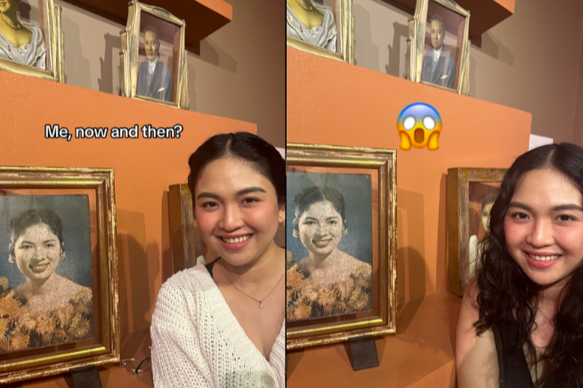

Published January 30, 2024
None other than Ambeth Ocampo took notice of a National Museum visitor, who went viral for bearing an uncanny resemblance to Belen Ocampo, the mother of the renowned Filipino historian.
Veronica Balayo took to TikTok to share her most interesting visit to the National Museum last week.
Posting photos of the display and then posing beside it, Veronica said she "found this photo of a girl, and it kinda looks like…me, now and then?”
“Am I her reincarnation?” she added.
It seems she's not the only one who can see the resemblance because as of writing, her TikTok post has over 600,000 likes and over 5 million views on the platform. Even Ocampo himself got a whiff of her, well, most interesting encounter and left a comment.